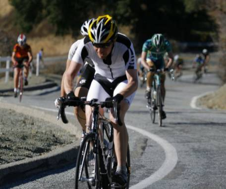

Low-Key Hillclimbs Aggregate Results:
Metcalf Rd
generated Fri Nov 4 10:34:14 PDT 2016
|
|  |
| 2008 week 7: New men's overall leader Tim Clark sets a brutal pace on the lower slopes. Eventual first to the top, multi-time Low-Key men's champion Tracy Colwell is third. |
Results are listed here from the Low-Key archives, sorted by time for each climb. Some years start and/or finish time differ slightly, such as
with Kings Mt Road where after 1995 the start moved from Entrance Way to Greer.
Results are ranked by time first, score second.
Score is calculated using a simple percent-of-median-speed
formula, with time adjustments for division. These scores will generally differ from those calculated in the results for that particular year, since
the scoring scheme has evolved. Tandems are split between 1998, when they were counted as single participants, and other years, when the individual
riders have been counted separately
Results for Men
| rank | time | score | rider | cat | team | year | week | code |
|---|
| 1 | 10:29 | 132.894 | Tracy Colwell | 2 | Team Colwell | 2008 | 7 | |
| 2 | 10:31 | 132.472 | Tim Clark | 35+ | Red Octane | 2008 | 7 | |
| 3 | 10:53 | 128.009 | Clark Foy | 40+ | San Jose Bike Club | 2008 | 7 | |
| 4 | 10:55 | 127.618 | Scott Frake | Bald | Alto Velo | 2008 | 7 | |
| 5 | 11:13 | 124.205 | Greg McQuaid | 35+ | San Jose Bike Club | 2008 | 7 | |
| 6 | 11:18 | 123.289 | Thomas Novikoff | 2 | Cambio | 2008 | 7 | |
| 7 | 11:20 | 122.927 | Geoff Drake | 45+ | Bike Trip/Symantec | 2008 | 7 | |
| 8 | 11:35 | 120.273 | Mark Edwards | 45+ | Bike Trip/Symantec | 2008 | 7 | |
| 8 | 11:35 | 120.273 | Tom Roberts | 40+ | San Jose Bike Club | 2008 | 7 | |
| 10 | 11:51 | 117.567 | Hector Barron | | | 2008 | 7 | |
| 11 | 12:01 | 115.936 | Brian Edwards | 25+ | Hell Riders | 2008 | 7 | |
| 12 | 12:03 | 115.616 | Dave Rossow | 35+ | Alto Velo | 2008 | 7 | |
| 13 | 12:06 | 115.138 | Craig Sanders | 40+ | X Men | 2008 | 7 | |
| 14 | 12:15 | 113.728 | John Walker | 40+ | Google | 2008 | 7 | |
| 15 | 12:17 | 113.419 | Yuma Koishi | Junior | San Jose Bike Club | 2008 | 7 | |
| 16 | 12:21 | 112.807 | Michael Barnes | | | 2008 | 7 | |
| 17 | 12:31 | 111.305 | Nils Tikkanen | 3 | Bike Trip/Symantec | 2008 | 7 | |
| 18 | 12:34 | 110.862 | James Porter | Out Of Shape Dads | Western Wheelers | 2008 | 7 | |
| 19 | 12:35 | 110.715 | Karl Schilling | 45+ | LGBRC | 2008 | 7 | |
| 20 | 12:37 | 110.423 | Rich Hill | 40+ | LGBRC | 2008 | 7 | |
| 21 | 12:41 | 109.842 | Ken Gallardo | 30+ | Pen Velo/Pomodoro | 2008 | 7 | |
| 22 | 12:54 | 107.997 | Bruce Gardner | 35+ | Monta Vista Velo | 2008 | 7 | |
| 23 | 13:00 | 107.167 | Jeff Farnsworth | 50+ | San Jose Bike Club | 2008 | 7 | |
| 24 | 13:01 | 107.030 | Jim Langley | 50+ | Bike Trip/Symantec | 2008 | 7 | |
| 25 | 13:03 | 106.756 | Matt Werner | 45+ | Bike Trip/Symantec | 2008 | 7 | |
| 26 | 13:05 | 106.484 | Bill Davis | 4 | Google | 2008 | 7 | |
| 27 | 13:10 | 105.810 | Marc Barberis | 40+ | Western Wheelers | 2008 | 7 | |
| 28 | 13:19 | 104.618 | Scott Martin | 50+ | Bike Trip/Symantec | 2008 | 7 | |
| 29 | 13:27 | 103.581 | Gento Kusano | Junior | San Jose Bike Club | 2008 | 7 | |
| 30 | 13:31 | 103.070 | Matt Wocasek | 4 | Bike Trip/Symantec | 2008 | 7 | |
| 31 | 13:33 | 102.817 | Calvin Do | 35+ | Skinny slow guys | 2008 | 7 | |
| 32 | 13:35 | 102.564 | Christian Paquet | 50+ | Doogie | 2008 | 7 | |
| 33 | 13:42 | 101.691 | Andy Cedilnik | 30+ | | 2008 | 7 | |
| 34 | 14:04 | 99.040 | Michael Williams | 35+ | Sr's & Mr's of No Mercy | 2008 | 7 | |
| 35 | 14:11 | 98.226 | Bryan King | 4 | Bike Trip/Symantec | 2008 | 7 | |
| 36 | 14:19 | 97.311 | Bill Preucel | 45+ | Sr's & Mr's of No Mercy | 2008 | 7 | |
| 37 | 14:20 | 97.198 | Robert Palassou | | Sr's & Mr's of No Mercy | 2008 | 7 | |
| 38 | 14:21 | 97.085 | Jonathan Walden | | | 2008 | 7 | |
| 39 | 14:24 | 96.748 | Dean Larson | 40+ | Team Dino | 2008 | 7 | |
| 39 | 14:24 | 96.748 | Vincent Valvano | 50+ | | 2008 | 7 | |
| 41 | 14:29 | 96.191 | Paul Melville | 55+ | Doogie | 2008 | 7 | |
| 42 | 14:30 | 96.081 | Vincent Juarez | Junior | San Jose Bike Club | 2008 | 7 | |
| 43 | 14:32 | 95.860 | Dan Rohrer | | Leafy Joe | 2008 | 7 | |
| 44 | 14:36 | 95.422 | John Pollard | 45+ | Bike Trip/Symantec | 2008 | 7 | |
| 45 | 14:39 | 95.097 | William von Kaenel | 40+ | LGBRC | 2008 | 7 | |
| 46 | 14:40 | 94.989 | Joe Farinha | 45+ | San Jose Bike Club | 2008 | 7 | |
| 47 | 15:50 | 87.990 | Matt Beadon | 30+ | Nvidia | 2008 | 7 | |
| 48 | 16:03 | 86.802 | Alexander Garza | 55+ | Monta Vista Velo | 2008 | 7 | |
| 49 | 16:18 | 85.470 | Bruce Swanson | 45+ | Leafy Joe | 2008 | 7 | |
| 50 | 16:40 | 83.590 | Christopher Olson | | Google | 2008 | 7 | |
| 51 | 16:43 | 83.340 | Phil Dubach | 35+ | Western Wheelers | 2008 | 7 | |
| 52 | 16:55 | 82.355 | Ed Noskowski | 45+ | Leafy Joe | 2008 | 7 | |
| 53 | 17:20 | 80.375 | Jeff Swan | | Spike the Wonder Dog | 2008 | 7 | |
| 54 | 17:24 | 80.067 | Hajime Kusano | 50+ | San Jose Bike Club | 2008 | 7 | |
| 55 | 17:28 | 79.761 | Rick Piras | 50+ | | 2008 | 7 | |
| 56 | 17:39 | 78.933 | Brian Baccus | 50+ | San Jose Bike Club | 2008 | 7 | |
| 57 | 17:40 | 78.859 | Barry Burr | 45+ | One Leg to Stand On | 2008 | 7 | |
| 58 | 17:53 | 77.903 | Patrick Callahan | 35+ | Western Wheelers | 2008 | 7 | |
| 59 | 17:57 | 77.614 | Garry Chin | 40+ | Garry | 2008 | 7 | |
| 60 | 18:01 | 77.327 | Joseph Maurer | 60+ | RUSA | 2008 | 7 | |
| 61 | 18:34 | 75.036 | Mark Stepovich | 45+ | Poeseur Racing | 2008 | 7 | |
| 62 | 18:49 | 74.039 | Dan Dour | 45+ | | 2008 | 7 | |
| 63 | 19:09 | 72.750 | Paul Woodard | | Spike the Wonder Dog | 2008 | 7 | |
| 64 | 19:44 | 70.600 | Wolfgang Timm | 40+ | Western Wheelers | 2008 | 7 | |
| 65 | 19:53 | 70.067 | Michael Ahern | 40+ | LGBRC | 2008 | 7 | |
Results for Hybrid Electric
| rank | time | score | rider | cat | team | year | week | code |
|---|
| 1 | 8:01 | 100.978 | Bill Bushnell | Hybrid | Low-Key | 2008 | 7 | |
Results for Women
| rank | time | score | rider | cat | team | year | week | code |
|---|
| 1 | 13:54 | 120.902 | Jennie Phillips | 45+ | Sr's & Mr's of No Mercy | 2008 | 7 | |
| 2 | 14:35 | 115.237 | Lucia Mokres | 3 | LGBRC | 2008 | 7 | |
| 3 | 14:41 | 114.452 | Janet Martinez/Gardner | 40+ | Sr's & Mr's of No Mercy | 2008 | 7 | |
| 4 | 14:57 | 112.411 | Holly Harris | 45+ | Sr's & Mr's of No Mercy | 2008 | 7 | |
| 5 | 15:32 | 108.189 | Mei Xi | | Mud 'n' Crud | 2008 | 7 | |
| 6 | 16:21 | 102.785 | Laura Jump | | Spike the Wonder Dog | 2008 | 7 | |
| 7 | 19:08 | 87.833 | Gail Stanley | | Spike the Wonder Dog | 2008 | 7 | |
| 8 | 20:48 | 80.795 | Tamara Cracknell | 30+ | Google | 2008 | 7 | |
| 9 | 22:43 | 73.978 | Marie-Claire Vacher | | Western Wheelers | 2008 | 7 | |
| 10 | 24:38 | 68.222 | Christine Holmes | 40+ | Low-Key | 2008 | 7 | |
| 11 | 24:53 | 67.537 | Pat Parseghian | 50+ | Google | 2008 | 7 | |
Results for Tandem
| rank | time | score | rider | cat | team | year | week | code |
|---|
| 1 | 16:43 | 83.340 | Ileana Parker | Tandem | Alto Velo | 2008 | 7 | |
| 1 | 16:43 | 83.340 | Bob Parker | 50+ | AV: Old Guys Finish | 2008 | 7 | |
Results for Male Runner
| rank | time | score | rider | cat | team | year | week | code |
|---|
| 1 | 13:13 | 105.410 | Gary Gellin | Runner | Sr's & Mr's of No Mercy | 2008 | 7 | R |
| 2 | 15:45 | 88.455 | Daniel Connelly | 3 | Low-Key | 2008 | 7 | R |
R : runner